Personalizing Sugar
You can customize Sugar to meet your needs. You can change options such as:
- the color of your XO icon
- your nickname
- the language used in the interface
- the power-saving features
The Sugar Control Panel is the place to configure your system.
Note: Many of the changes described in this chapter require that you restart Sugar (ctrl+alt+erase) for them to take effect.
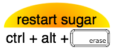
Opening the Sugar Control Panel
Hover over the XO icon in the center of the Home View and a menu appears. Select Control Panel.
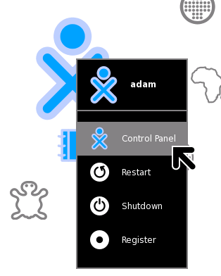
Main Panel
The Main Panel has eight categories of options.
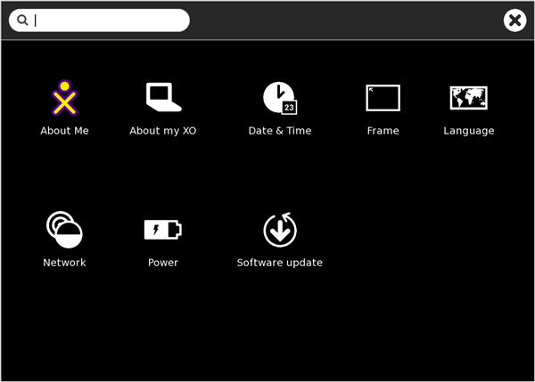
You can use the text box at the top of the window to search the available options. Options that don't match the search text will be dimmed.
You accept changes made on the category panels by clicking the "OK" button in the top right corner. Clicking the "Cancel" button discards the changes and return you to the main panel.
You can quit the control panel by clicking the "X" in the top right corner of the panel.
About Me
Note: If you make changes on this panel, you must restart Sugar (ctrl+alt+erase) for them to take effect. Caution: You may lose any work you have open.
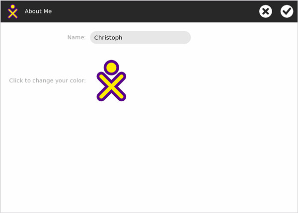
Name
You can change your user name in this box. The user name appears when you start Sugar.
Color
Click the XO icon to cycle through the colors for it. These colors show up in the Neighborhood View, Group View, Home View, on your Frame and when sharing with other Sugar users. There are almost 400 different color combinations available, which consist of a combination of six base-colors (red, orange, yellow, green, blue, purple) used as stroke-color and fill-color and three shades (light, medium, dark).
Please see wiki.laptop.org/images/0/05/Buddy-Icon-Color-Matrix.pdf for an overview of all the available color combinations.
About my XO
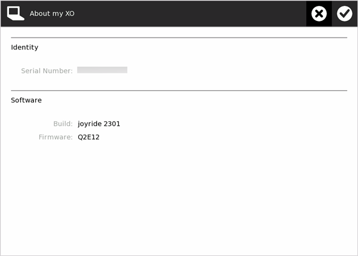
Identity
Some computers, such as the XO laptop, report the serial number here. You might need the serial number for repair service or to request a developer key.
Software
Here you can see which software and firmware version is currently installed on your system.
Date & Time
Note: If you make changes on this panel, you must restart Sugar (ctrl+alt+erase) for them to take effect. Caution: You may lose any work you have open.
You can set your time zone in multiple ways:
- Select a location such as Europe/Vienna.
- Enter an offset to Greenwich Mean Time (GMT) or Coordinated Universal Time (UTC), for example: GMT+2
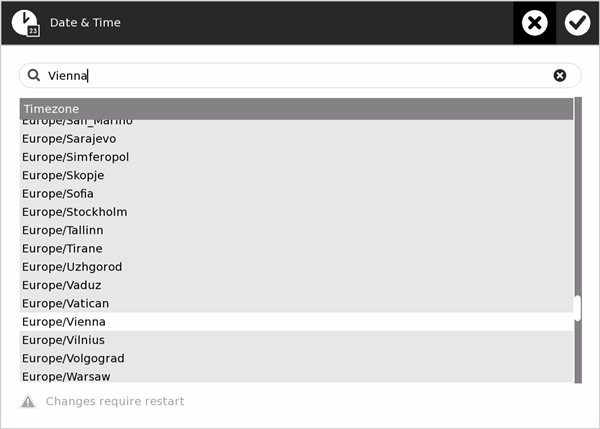
Frame
Note: If you make changes on this panel, you must restart Sugar (ctrl+alt+erase) for them to take effect. Caution: You may lose any work you have open.
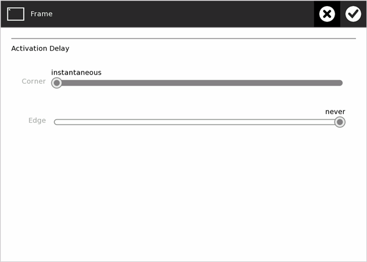
Activation Delay
You can change the delay for activating the Frame. You can set the delay separately for the corners and edges.
- "instantaneous" means that the Frame appears immediately when you move the pointer to that position (corner or edge).
- "never" means that moving the pointer to that position never activates the Frame.
- Values in the middle of the range indicate what fraction of a second the pointer must remain in the position before the Frame activates. The range is from 0.001 to 0.999 seconds.
In the default configuration the Frame is instantly shown when the pointer is moved into one of the corners of the screen.
Language
Note: If you make changes on this panel, you must restart Sugar (ctrl+alt+erase) for them to take effect. Caution: You may lose any work you have open.
You can select your system's default language. Even though your language might be included in the list, the translation might not be complete or available.
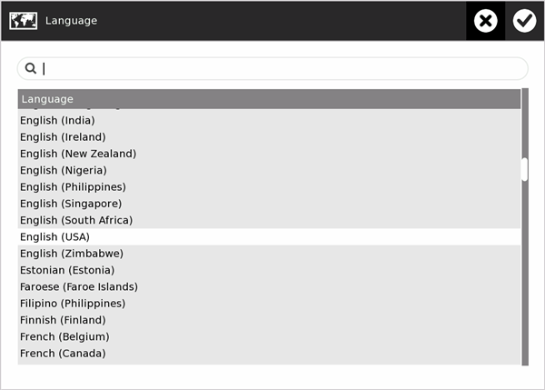
Network
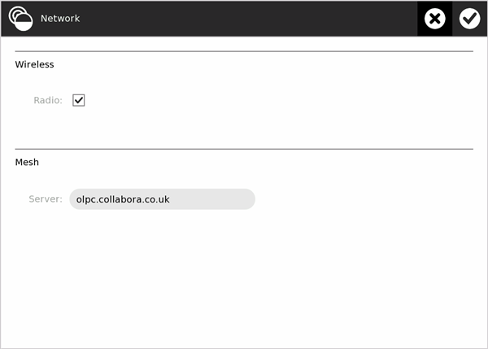
Wireless
This checkbox allows you to turn the system's wireless radio on or off. For example, if you use the system on an airplane, you must turn the radio off.
Mesh
Note: If you make changes to this setting, you must restart Sugar (ctrl+alt+erase) for them to take effect. Caution: You may lose any work you have open.
Here you can enter the name of a collaboration server based on jabber. This lets you to share Activities with other people connected to the same server, even when they're located half-way around the world.
Please note that some local OLPC user clubs and universities run their own collaboration server so it is worth checking wiki.laptop.org for relevant information.
Power
You can configure the power-saving features of your system.
Please note that these settings are always used, even when the computer is plugged into a power outlet.
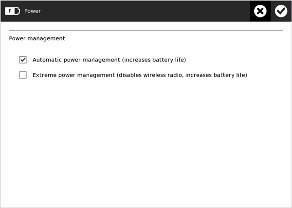
Click the check boxes to enable or disable the following options.
Automatic power management
This mode dims the brightness of the display and turns off the CPU after one minute when there is no input via the touchpad or keyboard and no Activities that make heavy use of the CPU.
Extreme power management (disables wireless radio, increases battery life)
Enabling this mode turns off your wireless radio. This significantly increases your system's battery life. Enabling this option turns off the two LEDs on the left side of the laptop. You won't be able to see any other networks or XOs on your Neighborhood View. Enable this mode for maximum battery life.
Software updates
You can select, install, and update Activities on your system.
Checking for updates
If your system is connected to the Internet, it tries to fetch a list of all the available Activities.
If your system isn't connected, the message "Could not access the network to check for updates" appears.
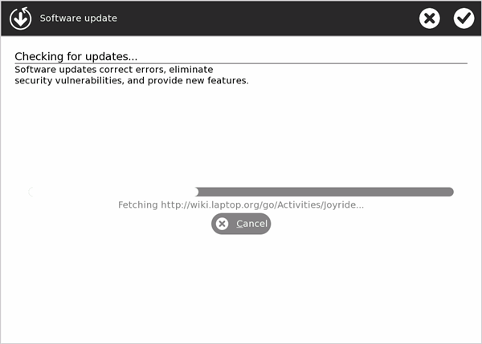
Selecting updates
The panel shows a list of new or updated Activities that are available. The overview also contains information about the Activity's version and size. An Activity is selected if its check box contains a check mark.
- Select the Activities that you want to install on your system, and clear the checkboxes for the ones you don't want to install.
- Click "Install selected".

Modifying Activity groups
You can click on Modify activity groups to enter alternative activity groups.
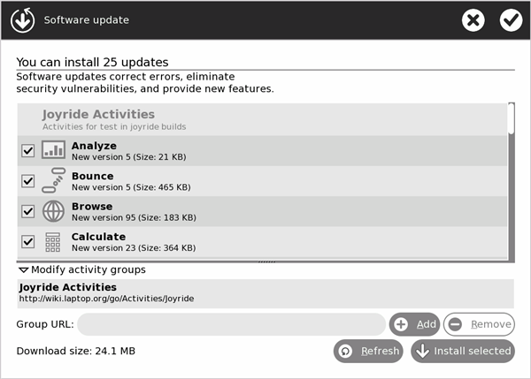
Downloading updates
A status view informs you of the download and installation progress.
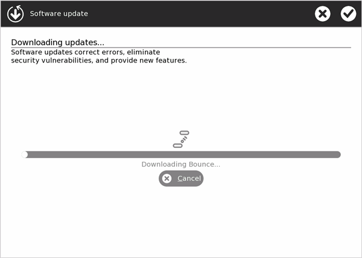
Software is up-to-date
If all your Activities are up-to-date, you see the following message.
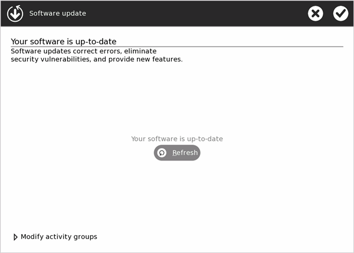
Author : Personalising
© Christoph Derndorfer 2008
Modifications:
adam hyde 2008
Anne Gentle 2008
Brian Jordan 2008
Charles McCarthy 2008
David Farning 2008
Janet Swisher 2008
Walter Bender 2008
License : General Public License
Produced in FLOSS Manuals (http://www.flossmanuals.net)